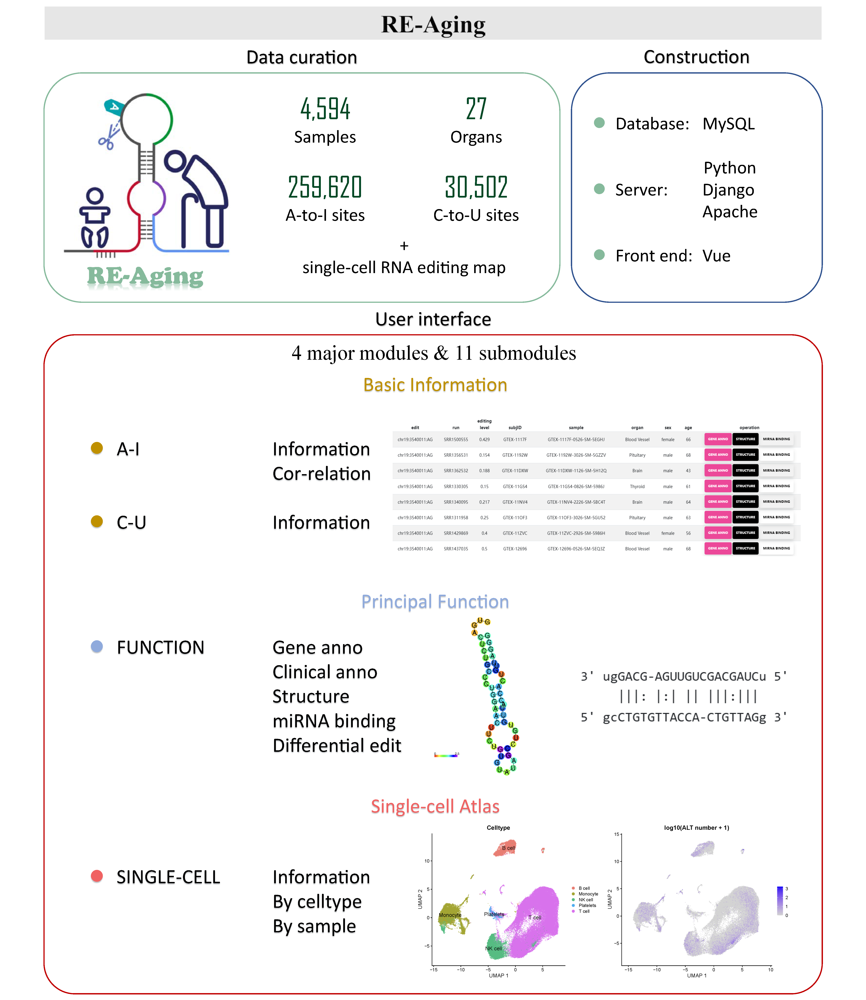

Content
Figure 1. A schematic diagram illustrating the data curation, web construction and user interface of RE-Aging.
RNA editing is a process that modifies mRNA by changing nucleotide sequences, leading to diverse functional outcomes. There is a certain association between RNA editing and aging. In this study, we introduce RE-Aging, a platform for analyzing aging-related RNA editing. Using GTEx data, we identified 259,620 A-to-I and 30,502 C-to-U RNA editing sites across 27 human tissues and organs. The platform allows users to explore RNA editing site information and correlations between A-to-I editing and age across organs, and provides options to download A-to-I and C-to-U data and correlations. The FUNCTION section offers tools for gene and region annotations, RNA structural changes, and miRNA binding alterations due to editing. Users can upload their own miRNA FASTQ files for analysis. The platform also includes differential RNA editing analysis using the Wilcoxon test, with sample information available for download or custom analysis via uploaded DEMO FILEs. Additionally, we present a single-cell RNA editing age map for various blood cell types. The SINGLE-CELL section provides insights into gene expression and editing relationships, with filtering options by cell type or sample. scCancerExplorer is freely accessible via http://bioinfo-sysu.com/RE-Aging/.